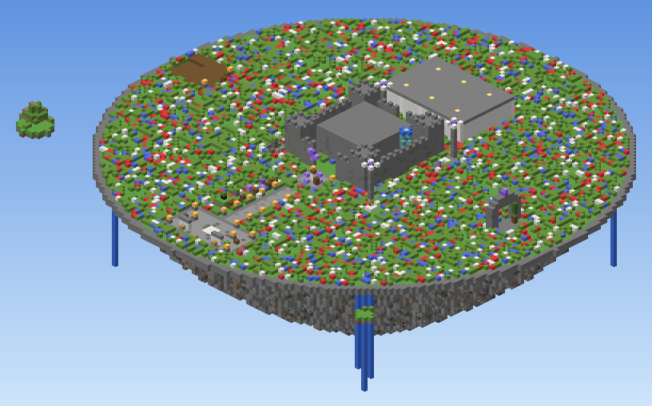
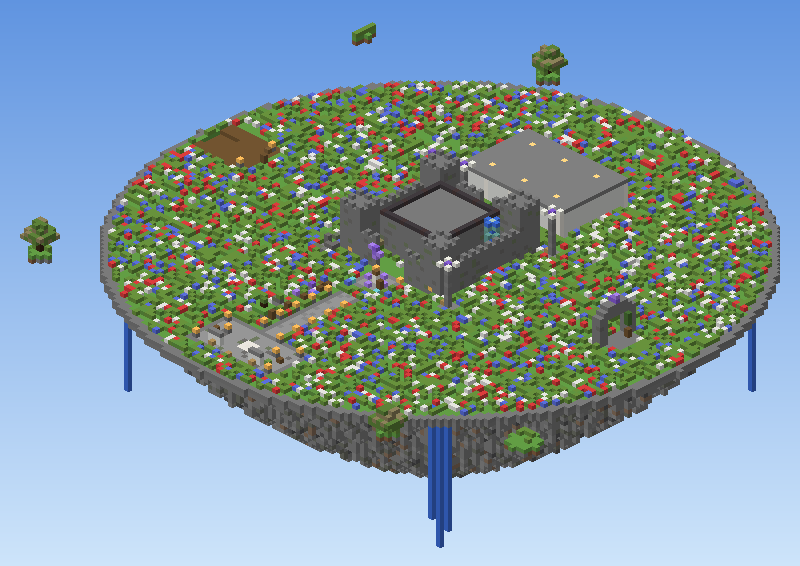

121×121 floating island · spawn south (bottom), Hall of Relics north (top) · top-down heightmap + north–south cross-section through the keep
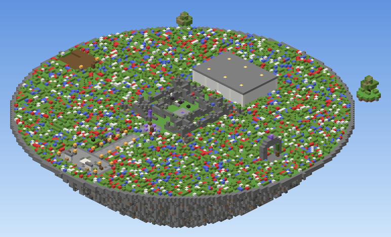
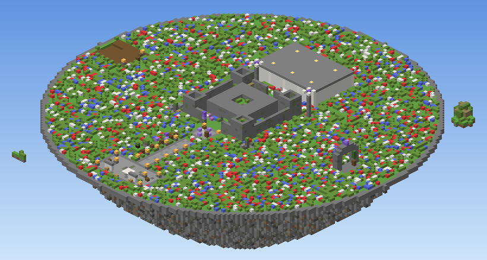


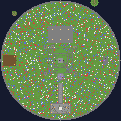
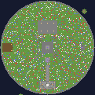
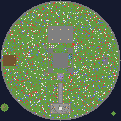
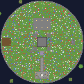
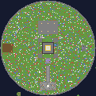
Left = west (Ruin Dock) · centre = Citadel · right = east (Island Gate)
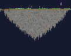
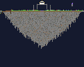
A new player spawns on the south terrace (bottom of the top-down images), walks the tutorial path north, passes the Donation Altar, and reaches the keep gate — with the Hall of Relics behind it, the Ruin Dock to the west and the Island Gate arch to the east.